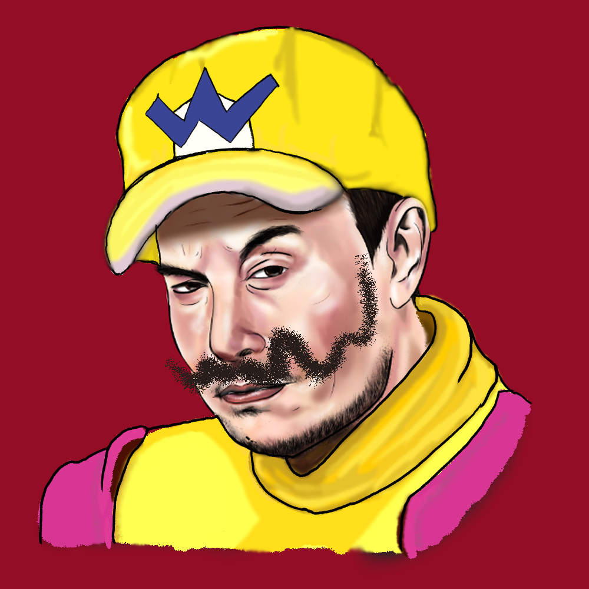

Comission Projects
The VCAD "Color and Design" project final for personifying an object. The object used was pencil, and the feeling was fear.

Colaborated drawing of the SNL Wario. (I drew the Wario part in Photoshop)
A Drawing prompt found from a friend of a little kitchen witch drawn in Photoshop
Comission of a friend from twitter drawn in Photoshop

Anime inspired landscape drawn in Photoshop.

Concept design of a modern Dracula's car, inspired from a VCAD course. Drawn in Photoshop
Graphic Design
Comission done for a girl on twitter. 1/2 Offical Logo
Comission done for a girl on twitter. 1/2 Offical Logo
A logo created in Photoshop (didn't know Adobe Illustrator at the time) to be used on water bottles
Keeshond logo created of my dog Ruka for my Instagram Stories
Logo created of my cat Ornstein for my Instagram Stories
Website Development Projects
As most of my web developement projects have been confidental, the few on display are descriptions of past projects